Song Kang-ho
Detective Park Doo-man
Song Kang-ho is a celebrated South Korean actor, known for his work in films such as Memories of Murder (2003), The Host (2006), and Parasite (2019). Often cast in leading roles that explore social and political issues, Song is regarded as one of Korea's most versatile actors. In Snowpiercer, he plays Namgoong Minsoo, a former prisoner and security expert who helps the rebels navigate the train's security systems.
Actor

Kim Sang-kyung
Detective Seo Tae-yoon
Kim Sang-kyung is known for his performances in films like Tale of Cinema and The Tower. In Memories of Murder, he plays Detective Seo Tae-yoon, a city detective brought in to assist with the case. Kim brings a sense of professionalism and intensity to the role, providing a counterpoint to Song Kang-ho's character as they clash in their approaches to solving the mystery.
Actor

Kim Roi-ha
Detective Cho Yong-koo
Kim Roi-ha, known for his supporting roles in films such as A Bittersweet Life and Public Enemy Returns, plays Detective Cho Yong-koo. As Park Doo-man's rough-edged partner, he contributes a gritty, often aggressive dynamic to the investigation, with a style that’s both humorous and haunting in the context of the case.
actor

Song Jae-ho
Sergeant Shin Dong-chul
Song Jae-ho, a veteran actor, plays Sergeant Shin Dong-chul, the head of the investigation team. Known for his work in classic Korean films and dramas, he brings gravitas to his role as the senior officer overseeing the detectives. His presence adds weight to the film’s dramatic tension as the investigation deepens.
Actor

Park Hae-il
Baek Kwang-ho
Park Hae-il, who later starred in The Host, plays a small but memorable role as Baek Kwang-ho, a suspect in the case. His haunting portrayal of a man under suspicion showcases his talent for adding nuance and ambiguity to his characters, leaving a lasting impact on the storyline.
 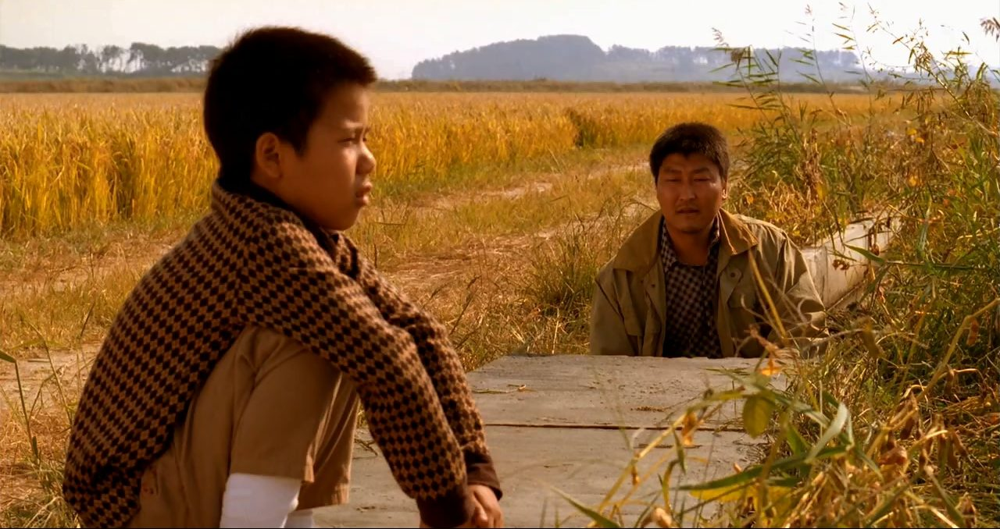
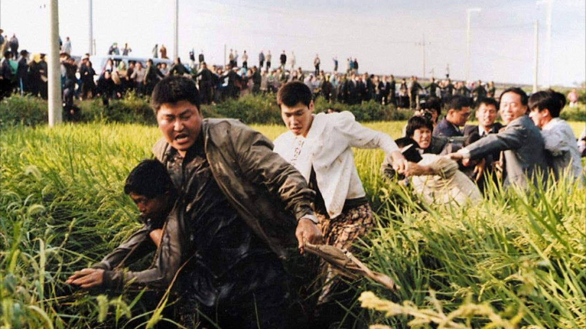
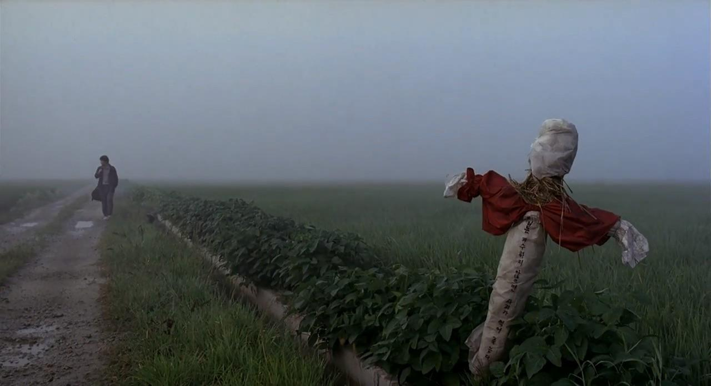
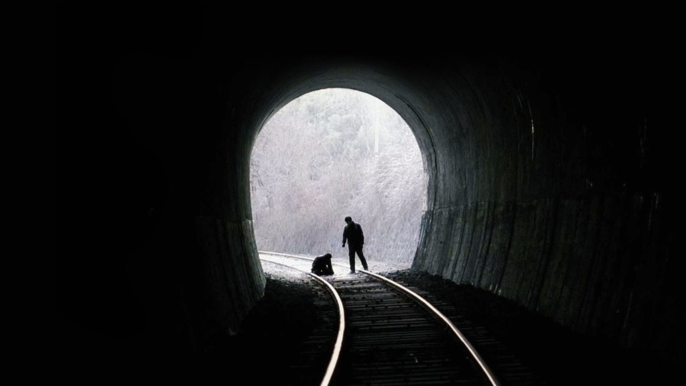
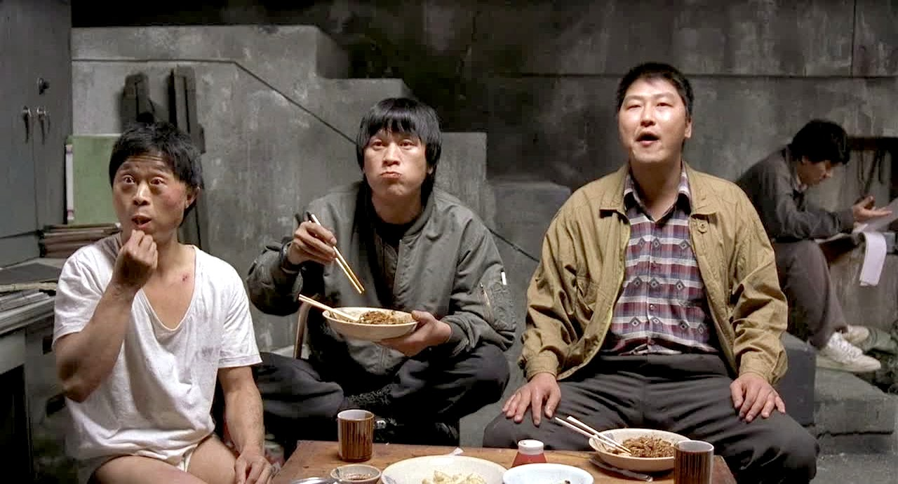
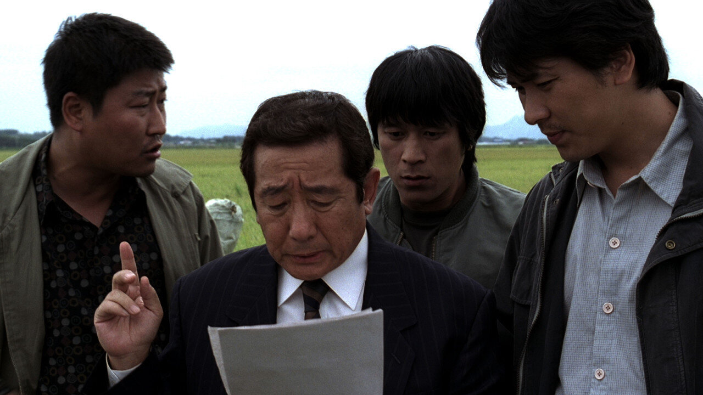
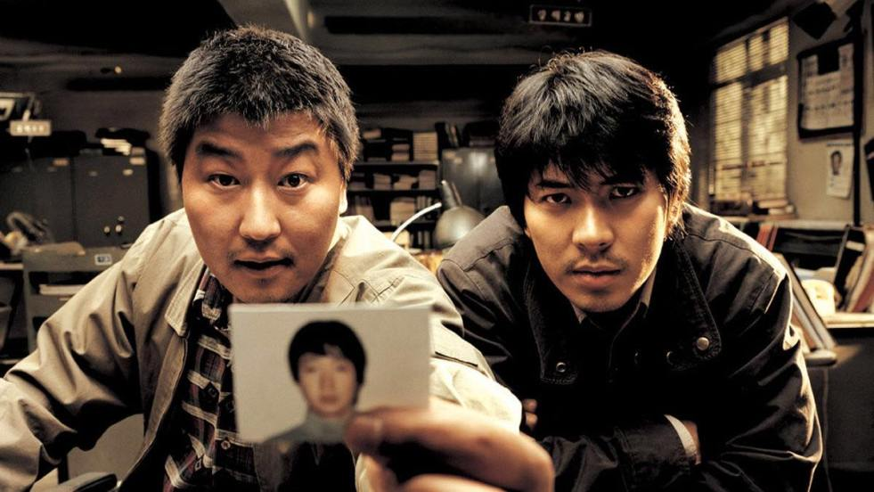
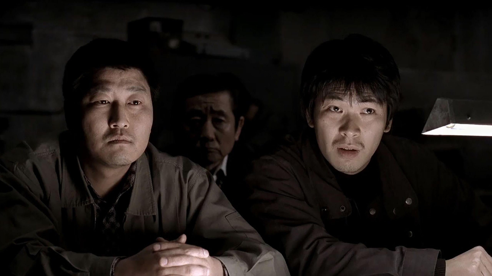
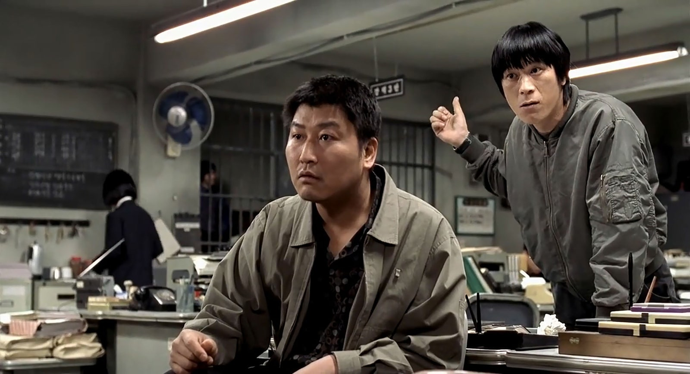
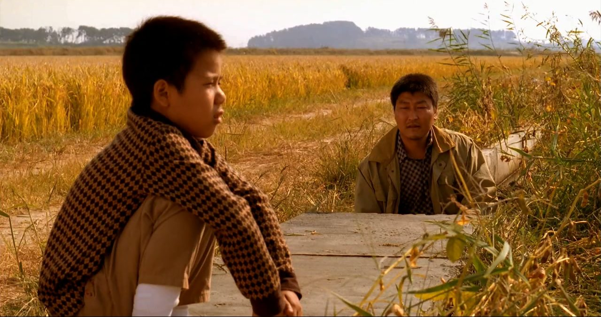
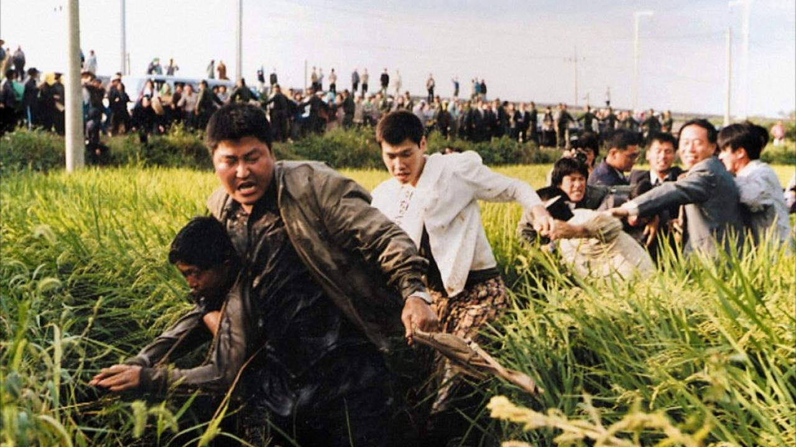
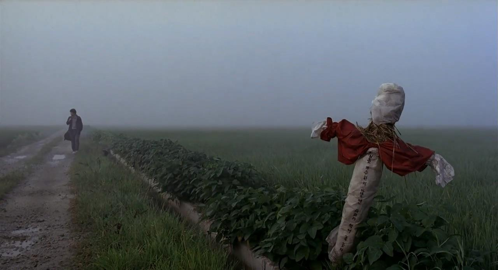
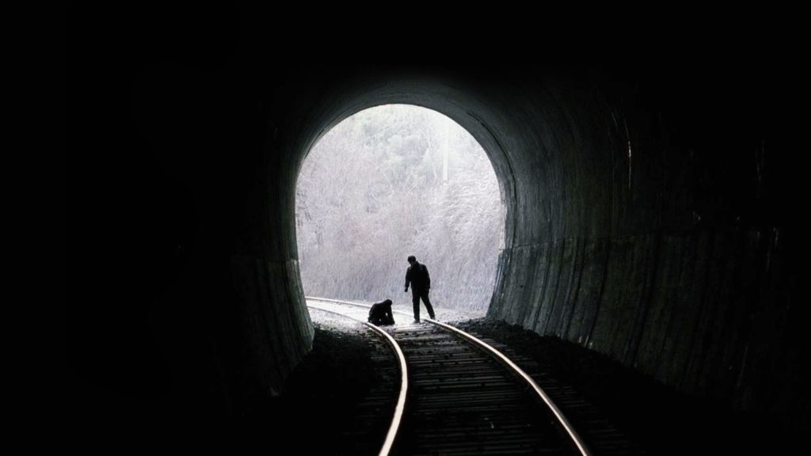
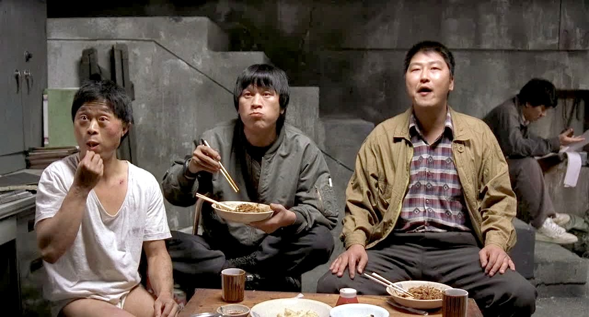
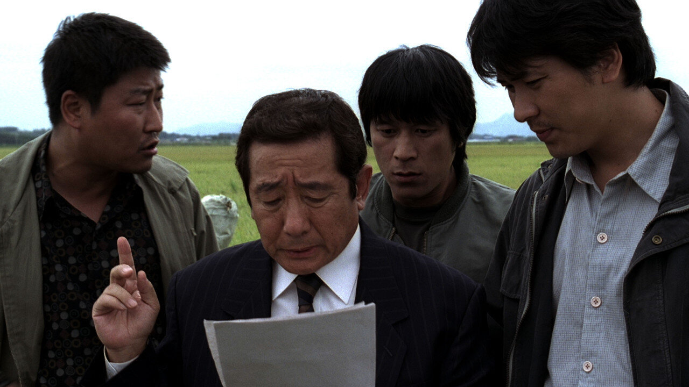
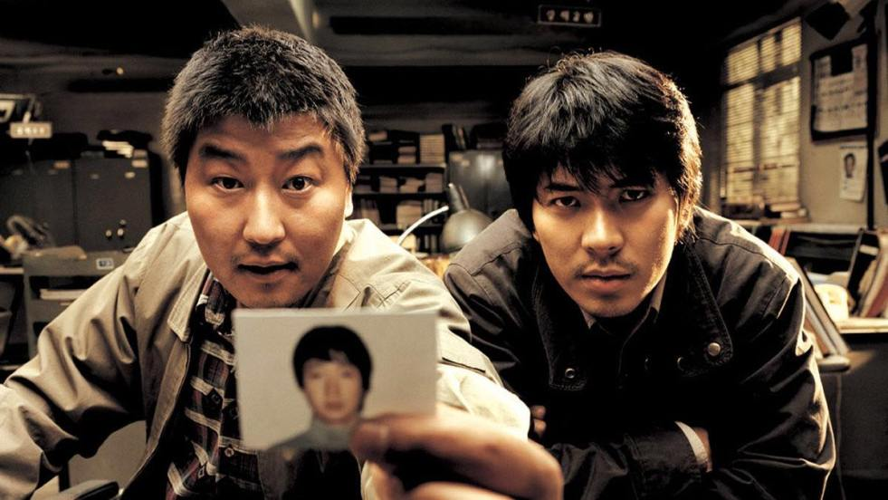
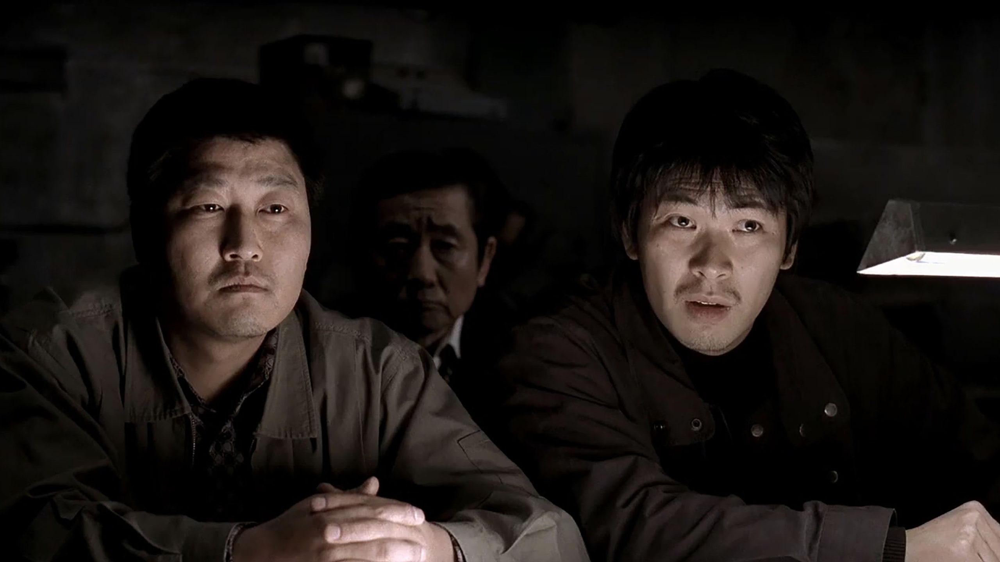
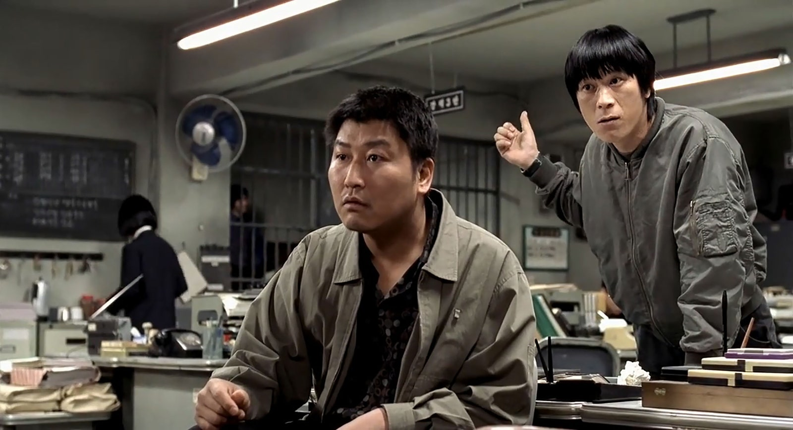